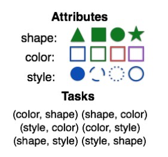

- 000 开篇词 你的360度人工智能信息助理.md
- 001 聊聊2017年KDD大会的时间检验奖.md
- 002 精读2017年KDD最佳研究论文.md
- 003 精读2017年KDD最佳应用数据科学论文.md
- 004 精读2017年EMNLP最佳长论文之一.md
- 005 精读2017年EMNLP最佳长论文之二.md
- 006 精读2017年EMNLP最佳短论文.md
- 007 精读2017年ICCV最佳研究论文.md
- 008 精读2017年ICCV最佳学生论文.md
- 009 如何将深度强化学习应用到视觉问答系统？.md
- 010 精读2017年NIPS最佳研究论文之一：如何解决非凸优化问题？.md
- 011 精读2017年NIPS最佳研究论文之二：KSD测试如何检验两个分布的异同？.md
- 012 精读2017年NIPS最佳研究论文之三：如何解决非完美信息博弈问题？.md
- 013 WSDM 2018论文精读：看谷歌团队如何做位置偏差估计.md
- 014 WSDM 2018论文精读：看京东团队如何挖掘商品的替代信息和互补信息.md
- 015 WSDM 2018论文精读：深度学习模型中如何使用上下文信息？.md
- 016 The Web 2018论文精读：如何对商品的图片美感进行建模？.md
- 017 The Web 2018论文精读：如何改进经典的推荐算法BPR？.md
- 018 The Web 2018论文精读：如何从文本中提取高元关系？.md
- 019 SIGIR 2018论文精读：偏差和流行度之间的关系.md
- 020 SIGIR 2018论文精读：如何利用对抗学习来增强排序模型的普适性？.md
- 021 SIGIR 2018论文精读：如何对搜索页面上的点击行为进行序列建模？.md
- 022 CVPR 2018论文精读：如何研究计算机视觉任务之间的关系？.md
- 023 CVPR 2018论文精读：如何从整体上对人体进行三维建模？.md
- 024 CVPR 2018论文精读：如何解决排序学习计算复杂度高这个问题？.md
- 025 ICML 2018论文精读：模型经得起对抗样本的攻击？这或许只是个错觉.md
- 026 ICML 2018论文精读：聊一聊机器学习算法的公平性问题.md
- 027 ICML 2018论文精读：优化目标函数的时候，有可能放大了不公平？.md
- 028 ACL 2018论文精读：问答系统场景下，如何提出好问题？.md
- 029 ACL 2018论文精读：什么是对话中的前提触发？如何检测？.md
- 030 ACL 2018论文精读：什么是端到端的语义哈希？.md
- 030 复盘 7 一起来读人工智能国际顶级会议论文.md
- 031 经典搜索核心算法：TF-IDF及其变种.md
- 032 经典搜索核心算法：BM25及其变种（内附全年目录）.md
- 033 经典搜索核心算法：语言模型及其变种.md
- 034 机器学习排序算法：单点法排序学习.md
- 035 机器学习排序算法：配对法排序学习.md
- 036 机器学习排序算法：列表法排序学习.md
- 037 查询关键字理解三部曲之分类.md
- 038 查询关键字理解三部曲之解析.md
- 039 查询关键字理解三部曲之扩展.md
- 040 搜索系统评测，有哪些基础指标？.md
- 041 搜索系统评测，有哪些高级指标？.md
- 042 如何评测搜索系统的在线表现？.md
- 043 文档理解第一步：文档分类.md
- 044 文档理解的关键步骤：文档聚类.md
- 045 文档理解的重要特例：多模文档建模.md
- 046 大型搜索框架宏观视角：发展、特点及趋势.md
- 047 多轮打分系统概述.md
- 048 搜索索引及其相关技术概述.md
- 049 PageRank算法的核心思想是什么？.md
- 050 经典图算法之HITS.md
- 052 机器学习排序算法经典模型：RankSVM.md
- 053 机器学习排序算法经典模型：GBDT.md
- 054 机器学习排序算法经典模型：LambdaMART.md
- 055 基于深度学习的搜索算法：深度结构化语义模型.md
- 056 基于深度学习的搜索算法：卷积结构下的隐含语义模型.md
- 057 基于深度学习的搜索算法：局部和分布表征下的搜索模型.md
- 057 复盘 1 搜索核心技术模块.md
- 058 简单推荐模型之一：基于流行度的推荐模型.md
- 059 简单推荐模型之二：基于相似信息的推荐模型.md
- 060 简单推荐模型之三：基于内容信息的推荐模型.md
- 061 基于隐变量的模型之一：矩阵分解.md
- 062 基于隐变量的模型之二：基于回归的矩阵分解.md
- 063 基于隐变量的模型之三：分解机.md
- 064 高级推荐模型之一：张量分解模型.md
- 065 高级推荐模型之二：协同矩阵分解.md
- 066 高级推荐模型之三：优化复杂目标函数.md
- 067 推荐的Exploit和Explore算法之一：EE算法综述.md
- 068 推荐的Exploit和Explore算法之二：UCB算法.md
- 069 推荐的Exploit和Explore算法之三：汤普森采样算法.md
- 070 推荐系统评测之一：传统线下评测.md
- 071 推荐系统评测之二：线上评测.md
- 072 推荐系统评测之三：无偏差估计.md
- 073 现代推荐架构剖析之一：基于线下离线计算的推荐架构.md
- 074 现代推荐架构剖析之二：基于多层搜索架构的推荐系统.md
- 075 现代推荐架构剖析之三：复杂现代推荐架构漫谈.md
- 076 基于深度学习的推荐模型之一：受限波兹曼机.md
- 077 基于深度学习的推荐模型之二：基于RNN的推荐系统.md
- 078 基于深度学习的推荐模型之三：利用深度学习来扩展推荐系统.md
- 078 复盘 2 推荐系统核心技术模块.md
- 079 广告系统概述.md
- 080 广告系统架构.md
- 081 广告回馈预估综述.md
- 082 Google的点击率系统模型.md
- 083 Facebook的广告点击率预估模型.md
- 084 雅虎的广告点击率预估模型.md
- 085 LinkedIn的广告点击率预估模型.md
- 086 Twitter的广告点击率预估模型.md
- 087 阿里巴巴的广告点击率预估模型.md
- 088 什么是基于第二价位的广告竞拍？.md
- 089 广告的竞价策略是怎样的？.md
- 090 如何优化广告的竞价策略？.md
- 091 如何控制广告预算？.md
- 092 如何设置广告竞价的底价？.md
- 093 聊一聊程序化直接购买和广告期货.md
- 094 归因模型：如何来衡量广告的有效性.md
- 095 广告投放如何选择受众？如何扩展受众群？.md
- 096 复盘 4 广告系统核心技术模块.md
- 096 如何利用机器学习技术来检测广告欺诈？.md
- 097 LDA模型的前世今生.md
- 098 LDA变种模型知多少.md
- 099 针对大规模数据，如何优化LDA算法？.md
- 100 基础文本分析模型之一：隐语义分析.md
- 101 基础文本分析模型之二：概率隐语义分析.md
- 102 基础文本分析模型之三：EM算法.md
- 103 为什么需要Word2Vec算法？.md
- 104 Word2Vec算法有哪些扩展模型？.md
- 105 Word2Vec算法有哪些应用？.md
- 106 序列建模的深度学习利器：RNN基础架构.md
- 107 基于门机制的RNN架构：LSTM与GRU.md
- 108 RNN在自然语言处理中有哪些应用场景？.md
- 109 对话系统之经典的对话模型.md
- 110 任务型对话系统有哪些技术要点？.md
- 111 聊天机器人有哪些核心技术要点？.md
- 112 什么是文档情感分类？.md
- 113 如何来提取情感实体和方面呢？.md
- 114 复盘 3 自然语言处理及文本处理核心技术模块.md
- 114 文本情感分析中如何做意见总结和搜索？.md
- 115 什么是计算机视觉？.md
- 116 掌握计算机视觉任务的基础模型和操作.md
- 117 计算机视觉中的特征提取难在哪里？.md
- 118 基于深度学习的计算机视觉技术（一）：深度神经网络入门.md
- 119 基于深度学习的计算机视觉技术（二）：基本的深度学习模型.md
- 120 基于深度学习的计算机视觉技术（三）：深度学习模型的优化.md
- 121 计算机视觉领域的深度学习模型（一）：AlexNet.md
- 122 计算机视觉领域的深度学习模型（二）：VGG & GoogleNet.md
- 123 计算机视觉领域的深度学习模型（三）：ResNet.md
- 124 计算机视觉高级话题（一）：图像物体识别和分割.md
- 125 计算机视觉高级话题（二）：视觉问答.md
- 126 计算机视觉高级话题（三）：产生式模型.md
- 126复盘 5 计算机视觉核心技术模块.md
- 127 数据科学家基础能力之概率统计.md
- 128 数据科学家基础能力之机器学习.md
- 129 数据科学家基础能力之系统.md
- 130 数据科学家高阶能力之分析产品.md
- 131 数据科学家高阶能力之评估产品.md
- 132 数据科学家高阶能力之如何系统提升产品性能.md
- 133 职场话题：当数据科学家遇见产品团队.md
- 134 职场话题：数据科学家应聘要具备哪些能力？.md
- 135 职场话题：聊聊数据科学家的职场规划.md
- 136 如何组建一个数据科学团队？.md
- 137 数据科学团队养成：电话面试指南.md
- 138 数据科学团队养成：Onsite面试面面观.md
- 139 成为香饽饽的数据科学家，如何衡量他们的工作呢？.md
- 140 人工智能领域知识体系更新周期只有5～6年，数据科学家如何培养？.md
- 141 数据科学家团队组织架构：水平还是垂直，这是个问题.md
- 142 数据科学家必备套路之一：搜索套路.md
- 143 数据科学家必备套路之二：推荐套路.md
- 144 数据科学家必备套路之三：广告套路.md
- 145 如何做好人工智能项目的管理？.md
- 146 数据科学团队必备的工程流程三部曲.md
- 147 数据科学团队怎么选择产品和项目？.md
- 148 曾经辉煌的雅虎研究院.md
- 149 微软研究院：工业界研究机构的楷模.md
- 150 复盘 6 数据科学家与数据科学团队是怎么养成的？.md
- 150 聊一聊谷歌特立独行的混合型研究.md
- 151 精读AlphaGo Zero论文.md
- 152 2017人工智能技术发展盘点.md
- 153 如何快速学习国际顶级学术会议的内容？.md
- 154 在人工智能领域，如何快速找到学习的切入点？.md
- 155 人工智能技术选择，该从哪里获得灵感？.md
- 156 内参特刊 和你聊聊每个人都关心的人工智能热点话题.md
- 156 近在咫尺，走进人工智能研究.md
- 结束语 雄关漫道真如铁，而今迈步从头越.md
006 精读2017年EMNLP最佳短论文
在今年的EMNLP大会上，有两类研究论文得到发表，一类是8页的长研究论文，主要是比较完整的研究结果；另一类是4页的短研究论文，主要是比较新的有待进一步推敲的研究结果。大会从长研究论文中选出两篇最佳论文，从短论文中选出一篇最佳论文。
前面我们分别讨论了两篇最佳长论文，今天，我就带你认真剖析一下EMNLP 2017年的最佳短论文《多智能体对话中，自然语言并非“自然”出现》（Natural Language Does Not Merge ‘Naturally’ in Multi-Agent Dialog）。我们今天讲的论文虽然是最佳短论文，但是作者们已经在arXiv发表了较长的文章版本，因此我今天的讲解将基于arXiv的长版本。
这篇文章研究的一个主要命题就是，多个“机器人”（Agent）对话中如何才能避免产生“非自然”（Unnatural）的对话。以前很多机器人对话的研究都关注准确率的高低，但实际上机器人产生的对话是不自然的，人类交流不会用这样的方式。这篇文章希望探讨的就是这样非自然的对话是如何产生的，有没有什么方式避免这样的结果。
作者群信息介绍
第一作者萨特维克·库托儿（Satwik Kottur）来自卡内基梅隆大学，博士第四年，研究领域为计算机视觉、自然语言和机器学习。2016年暑假他在Snapchat的研究团队实习，研究对话系统中的个性化问题。2017年暑假在Facebook研究院实习，做视觉对话系统（Visual Dialog System）的研究。近两年，萨特维克已在多个国际顶级会议如ICML 2017、IJCAI 2017、CVPR 2017、ICCV 2017以及NIPS 2017发表了多篇高质量研究论文，包括这篇EMNLP 2017的最佳短论文，可以说是一颗冉冉升起的学术新星。
第二作者何塞·毛拉（José M. F. Moura）是萨特维克在卡内基梅隆大学的导师。何塞是NAE（美国国家工程院）院士和IEEE（电气电子工程师学会）院士，长期从事信号处理以及大数据、数据科学的研究工作。他当选2018年IEEE总裁，负责IEEE下一个阶段的发展。
第三作者斯特凡·李（Stefan Lee）是来自乔治亚理工大学的研究科学家，之前在弗吉尼亚理工大学任职，长期从事计算机视觉、自然语言处理等多方面的研究。斯特凡2016年博士毕业于印第安纳大学计算机系。
第四作者德鲁·巴塔（Dhruv Batra）目前是Facebook研究院的科学家，也是乔治亚理工大学的助理教授。德鲁2010年博士毕业于卡内基梅隆大学；2010年到2012年在位于芝加哥的丰田理工大学担任研究助理教授；2013年到2016年在弗吉尼亚大学任教。德鲁长期从事人工智能特别是视觉系统以及人机交互系统的研究工作。文章的第三作者斯特凡是德鲁长期的研究合作者，他们一起已经发表了包括本文在内的多篇高质量论文。
论文的主要贡献
我们先来看看这篇文章主要解决了一个什么场景下的问题。
人工智能的一个核心场景，或者说想要实现的一个目标，就是能够建立一个目标导向（Goal-Driven）的自动对话系统（Dialog System）。具体来说，在这样的系统中，机器人能够感知它们的环境（包括视觉、听觉以及其他感官），然后能和人或者其他机器人利用自然语言进行对话，从而实现某种目的。
目前对目标导向的自动对话系统的研究主要有两种思路。
一种思路是把整个问题看做静态的监督学习任务（Supervised Learning），希望利用大量的数据，通过神经对话模型（Neural Dialog Models）来对对话系统进行建模。这个模式虽然在近些年的研究中取得了一些成绩，但是仍然很难解决一个大问题，那就是产生的“对话”其实不像真人对话，不具备真实语言的很多特性。
另外一种思路则把学习对话系统的任务看做一个连续的过程，然后用强化学习（Reinforcement Learning）的模式来对整个对话系统建模。
这篇文章尝试探讨，在什么样的情况下能够让机器人学习到类似人的语言。文章的一个核心发现就是，自然语言并不是自然出现的。在目前的研究状态下，自然语言的出现还是一个没有确定答案的开放问题。可以说，这就是这篇最佳短论文的主要贡献。
论文的核心方法
整篇文章其实是建立在一个虚拟的机器人交互场景里，也就是有两个机器人互相对话的一个环境。这个环境里有非常有限的物件（Object），每个物件包括三种属性（颜色、形状和样式），每一个属性包括四种可能取值，这样，在这个虚拟的环境中一共就有64个物件。

交互任务其实是两个机器人进行“猜谜”。为了区分，我们把两个机器人分为Q机器人和A机器人。猜谜一开始的时候，A机器人得到一个物件，也就是三种属性的某种实现组合，Q机器人并不知道这个物件。这个时候，Q机器人拿到两个属性的名字，需要通过对话最终猜出A拿到的这个物件所对应属性的取值。
在这个“游戏”的过程中，A是不知道Q手上的两个属性究竟是什么的，而Q也不知道A所拿的物件以及物件所对应属性的取值。因此，对话就是Q能够取得成功的关键因素。
在这篇文章里，Q和A的这个游戏通过强化学习进行建模。Q保持一组参数用于记录当前的状态。这组状态有最开始需要猜的属性，以及后面到当前状态为止所有Q的回答以及A的问题。类似地，A也保持这么一组状态，用于记录到目前位置的信息。这个强化学习最终的回馈是，当最后的预测值完全正确时，会有一个正1的反馈，而错误的话就是负10的反馈。
Q和A的模型都有三个模块：听、说和预测。以Q来举例，“听”模块是从要猜的属性这个任务开始，往后每一个步骤接受A的语句，从而更新自己的内部状态。“说”模块是根据当前的内部状态，决定下一步需要说的语句。最后“预测”模块则是根据所有的状态预测最后的属性值。
A机器人的结构是对称的。每一个模块本身都是一个 LSTM （Long Short-Term Memory，长短期记忆）模型。当然，所有这些LSTM模型的参数是不一样的。整个模型采用了REINFORCE算法（也被称作“vanilla” policy gradient，“基本”策略梯度）来学习参数，而具体的实现则采用了PyTorch软件包。
方法的实验效果
在提出的方法上，作者们展示了Q均能很快地以比较高的准确度做出预测，并且在和A的互动中产生了“语言”。不过遗憾的是，通过观察，作者们发现这样的“语言”往往并不自然。最直观的一种情况就是，A可以忽视掉Q的各种反应，而直接把A的内部信息通过某种编码直接“暴露”给Q，从而Q可以很快赢得游戏，取得几乎完美的预测结果。这显然不是想要的结果。
作者们发现，在词汇量（Vocabulary）非常大的情况下，这种情况尤其容易发生，那就是A把自己的整个状态都暴露给Q。于是，作者们假定要想出现比较有意义的交流，词汇数目一定不能过大。
于是，作者们采用了限制词汇数目的方式，让词汇数目与属性的可能值和属性数目相等，这样就限制了在完美情况下交流的复杂度，使得A没办法过度交流。然而，这样的策略可以很好地对一个属性做出判断，但是无法对属性的叠加（因为Q最终是要猜两个属性）做出判断。
文章给出的一个解决方案是，让A机器人忘记过去的状态，强行让A机器人学习使用相同的一组状态来表达相同的意思，而不是有可能使用新的状态。在这样的限制条件以及无记忆两种约束下，A和Q的对话呈现出显著的自然语言的叠加性特征，而且在没有出现过的属性上表现出了接近两倍的准确率，这是之前的方法所不能达到的效果。
小结
今天我为你讲了EMNLP 2017年的最佳短论文，这篇文章介绍了在一个机器人对话系统中，如何能让机器人的对话更贴近人之间的行为。
这篇文章也是第一篇从谈话的自然程度，而不是从预测准确度去分析对话系统的论文。文章的一个核心观点是，如果想让对话自然，就必须避免机器人简单地把答案泄露给对方，或者说要避免有过大的词汇库。
一起来回顾下要点：第一，我简要介绍了这篇文章的作者群信息，文章作者在相关领域均发表过多篇高质量研究成果论文。第二，这篇文章论证了多智能体对话中自然语言的出现并不自然。第三，论文提出在词汇量限制条件和无记忆约束下，机器人对话可以呈现出一定的自然语言特征。
最后，给你留一个思考题，文章讲的是一个比较简单的对话场景，有一个局限的词汇库，如果是真实的人与人或者机器与机器的对话，我们如何来确定需要多大的词汇量呢？
名词解释：
ICML 2017，International Conference on Machine Learning ，国际机器学习大会。
IJCAI 2017， International Joint Conference on Artificial Intelligence，人工智能国际联合大会。
CVPR 2017，Conference on Computer Vision and Pattern Recognition，国际计算机视觉与模式识别会议。
ICCV 2017，International Conference on Computer Vision，国际计算机视觉大会。
NIPS 2017，Annual Conference on Neural Information Processing Systems，神经信息处理系统大会。
拓展阅读：Natural Language Does Not Merge ‘Naturally’ in Multi-Agent Dialog
© 2019 - 2023 Liangliang Lee. Powered by gin and hexo-theme-book.